📖 Đã dịch sang tiếng Việt. Thuật ngữ chuyên môn giữ tiếng Anh — rê chuột để xem nghĩa (tooltip).
Canvas
Thay đổi toàn diện khung vẽ chỉ từ một menu đơn giản. Cắt, đổi kích thước và lật, sử dụng sức mạnh của Animation Assist (trợ giúp hoạt hình) và thêm Drawing Guides (đường dẫn vẽ). Bạn thậm chí có thể xem thông tin kỹ thuật chi tiết về tác phẩm.
Crop and Resize (cắt và đổi kích thước)
Tinh chỉnh kích thước và hình dáng khung vẽ để tạo bố cục hoàn hảo.
Để làm khung vẽ lớn hơn, nhỏ hơn hoặc khác hình dáng, chạm Actions > Canvas > Crop and Resize.
Thao tác này sẽ mở giao diện Crop and Resize, giúp thêm lớp phủ lưới lên ảnh. Các cạnh của khung này chính là các cạnh mới của khung vẽ. Bạn có thể điều chỉnh theo nhiều cách.
Rotation (độ xoay)
Mang một góc nhìn hoàn toàn mới cho tác phẩm với Rotate.
Dùng thanh trượt Rotation ở thanh công cụ dưới cùng để điều chỉnh góc của khung vẽ hiện tại so với vùng cắt.
Freeform Crop (cắt tự do)
Kéo các đường biên của lớp phủ lưới để cắt hoặc phóng to khung vẽ.
Kéo dãn hoặc nén kích thước khung vẽ theo một trục bằng cách kéo một cạnh của lớp phủ.
Để điều chỉnh kích thước khung vẽ trên cả hai trục ngang và dọc cùng lúc, hãy kéo một điểm góc.
Các thông số chiều rộng và chiều cao dạng số ở thanh công cụ dưới cùng sẽ cập nhật khi bạn điều chỉnh lớp phủ cắt.
Một thông báo ở thanh notification sẽ theo dõi xem kích thước khung vẽ mới có thể cung cấp bao nhiêu lớp. Do giới hạn phần cứng, bạn sẽ không thể kéo lưới vượt quá kích thước khung vẽ tối đa có thể.
Uniform Crop (cắt đồng đều)
Khóa tỉ lệ khung hình để cắt hoặc phóng to khung vẽ một cách đồng đều.
Aspect Lock là nút hình mắt xích nằm giữa các thông số chiều rộng và chiều cao. Chạm vào để khóa tỉ lệ giữa chiều rộng và chiều cao của ảnh. Thao tác này khóa hình dáng khung vẽ - ví dụ, một khung vẽ hình vuông sẽ vẫn là vuông dù bạn có đặt kích thước thế nào.
Numerical Crop (cắt theo số liệu)
Nhập kích thước dạng số để cắt hoặc phóng to khung vẽ một cách chính xác.
Thanh công cụ dưới cùng có các thông số dạng số hiển thị chiều rộng và chiều cao của khung vẽ. Chúng sẽ hiển thị theo đơn vị đo bạn đã đặt khi tạo khung vẽ. Ví dụ, nếu bạn đặt kích thước khung vẽ gốc theo inch, thông số cũng sẽ tính bằng inch.
Chạm vào thông số chiều rộng hoặc chiều cao để hiện bàn phím iPadOS, và nhập giá trị số cho trục đó. Nếu Aspect Lock đang bật, trục còn lại sẽ thay đổi để giữ nguyên tỉ lệ khung vẽ.
Nếu bạn dùng thao tác kéo để đổi kích thước, các thông số này sẽ cập nhật trực tiếp khi bạn thay đổi lớp phủ cắt.
Đặt hoặc đổi DPI của ảnh.
Để đặt hoặc đổi DPI của khung vẽ, chạm Actions → Canvas → Crop and Resize rồi nhập DPI mong muốn.
DPI (số điểm trên mỗi inch) là đơn vị đo độ phân giải in ấn. DPI cho biết mỗi inch của khung vẽ có bao nhiêu pixel. Pixel càng nhiều nghĩa là ảnh càng có khả năng thể hiện chi tiết và chất lượng in càng cao.
DPI tiêu chuẩn cho in ấn là 300 DPI. Nếu bạn định in tác phẩm, hãy đặt DPI tối thiểu là 300.
DPI tiêu chuẩn cho màn hình là 72-144 DPI. Nếu bạn muốn chia sẻ tác phẩm để người khác xem rõ trên màn hình, hãy đặt DPI trong khoảng 72-144.
Lưu ý rằng việc thay đổi cài đặt DPI sẽ làm thay đổi kích thước vật lý của khung vẽ tính bằng milimét, centimét và inch. Nó sẽ không làm thay đổi kích thước pixel.
Resample (lấy mẫu lại)
Phóng to hoặc thu nhỏ toàn bộ ảnh nhờ sức mạnh của Resample.
Để làm khung vẽ lớn hơn, nhỏ hơn hoặc khác hình dáng, chạm Actions → Canvas → Crop and Resize. Bật công tắc Resample để bắt đầu đổi kích thước nội dung.
Khi bạn bật Resample, Aspect Lock sẽ tự động được kích hoạt. Nó sẽ giữ nguyên tỉ lệ khung hình (chiều rộng và chiều cao tương đối) khi bạn đổi kích thước khung vẽ.
Nếu bạn muốn đổi tỉ lệ khung hình của khung vẽ khi đổi kích thước, hãy điều chỉnh lớp phủ cắt trước khi bật Resample.
Khi Resample đang bật, việc điều chỉnh kích thước lớp phủ cắt sẽ không làm thay đổi các thông số kích thước. Thay vào đó, các kích thước số bạn nhập sẽ xác định vùng khung vẽ. Thao tác này sẽ phóng to hoặc thu nhỏ khung vẽ cho khớp với kích thước số bạn đã chọn.
Nếu bạn cần đổi kích thước ảnh, hãy chạm vào một con số để hiện bàn phím iOS. Nhập kích thước mới. Vùng bên trong lớp phủ sẽ tự động phóng to hoặc thu nhỏ để vừa với kích thước đó.
Bạn có thể dùng Resample để thay đổi bố cục của tác phẩm mà không thay đổi kích thước tổng thể của khung vẽ. Ví dụ, bằng cách phóng to vào một phần bạn thích.
Snapping trong Crop & Resize
Snapping (bám dính) trong Crop & Resize sẽ tự động diễn ra khi bạn chạm Actions → Canvas → Crop & Resize.
Các cạnh của lớp phủ lưới tự động bám vào các cạnh, hoặc các điểm trung tâm ngang và dọc của khung vẽ. Điều này giúp cắt và đổi kích thước tác phẩm hoặc khung vẽ chính xác hơn.
Các cạnh của lớp phủ lưới cũng tự động bám vào các cạnh của bất kỳ tác phẩm nào trong khung vẽ. Nhờ đó bạn có thể cắt sát mép ảnh một cách chính xác.
Animation Assist (trợ giúp hoạt hình)
Giao diện có mọi thứ bạn cần để tạo hoạt hình và đồ họa chuyển động ấn tượng.
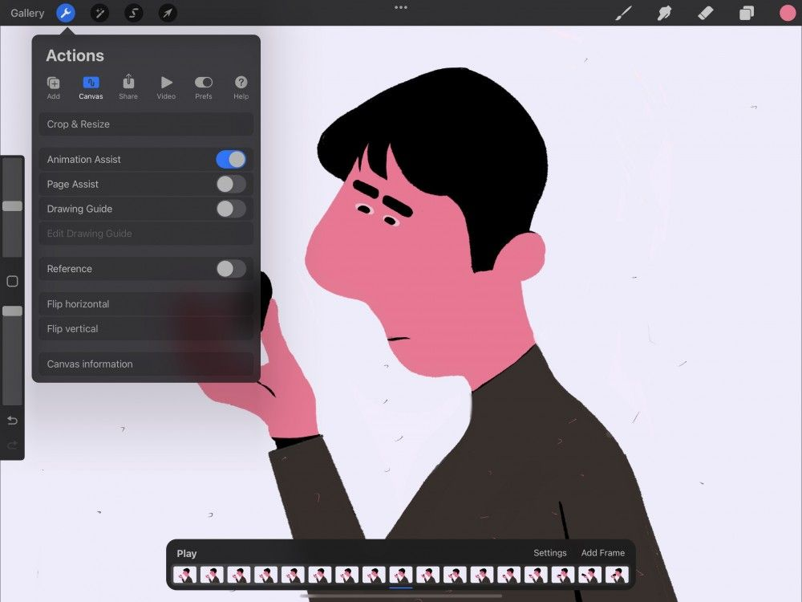

Animation Assist của Procreate là tất cả những gì bạn cần để thổi hồn vào tác phẩm. Cung cấp Timeline trực quan cho hoạt hình, onion-skinning giúp bạn nhìn thấy mình đang đi đâu và đã ở đâu, cùng các điều khiển Play/Pause. Animation Assist mang đến những tùy chọn mạnh mẽ giúp bạn tận dụng tối đa đồ họa chuyển động,
Chạm nút hình cờ lê ở góc trên bên trái màn hình để mở menu Actions. Chạm Canvas, và bật công tắc Animation Assist.
Animation Assist hiện đã được kích hoạt.
Discover what Animation Assist's robust features can help you achieve.
Page Assist (trợ lý trang)
Giao diện biến Procreate từ ứng dụng vẽ khung vẽ đơn thành một sổ phác thảo với nhiều trang.
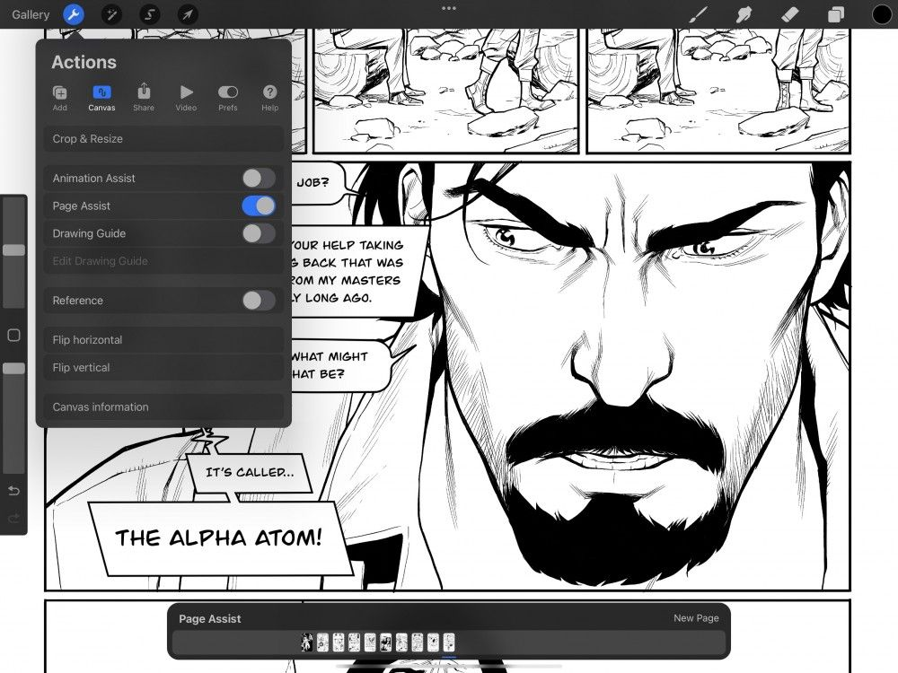
Page Assist biến từng lớp riêng lẻ thành các trang số của một cuốn sách với Timeline trực quan. Lý tưởng để lên ý tưởng và phác thảo, tạo truyện tranh, storyboard hoặc giữ nhật ký hình ảnh, Page Assist cũng có thể mở các PDF nhiều trang đã nhập để lật xem và đánh dấu bằng tất cả công cụ có sẵn trong Procreate.
Chạm nút hình cờ lê ở góc trên bên trái màn hình để mở menu Actions. Chạm Canvas, và bật công tắc Page Assist.
Page Assist hiện đã được kích hoạt.
Tìm hiểu thêm và cách tận dụng tối đa tính năng tiện dụng này ở phần Page Assist trong cuốn cẩm nang này.
Drawing Guide (đường dẫn vẽ)
Thêm một đường dẫn trực quan lên khung vẽ để giúp bạn dựng môi trường và vật thể chân thực.
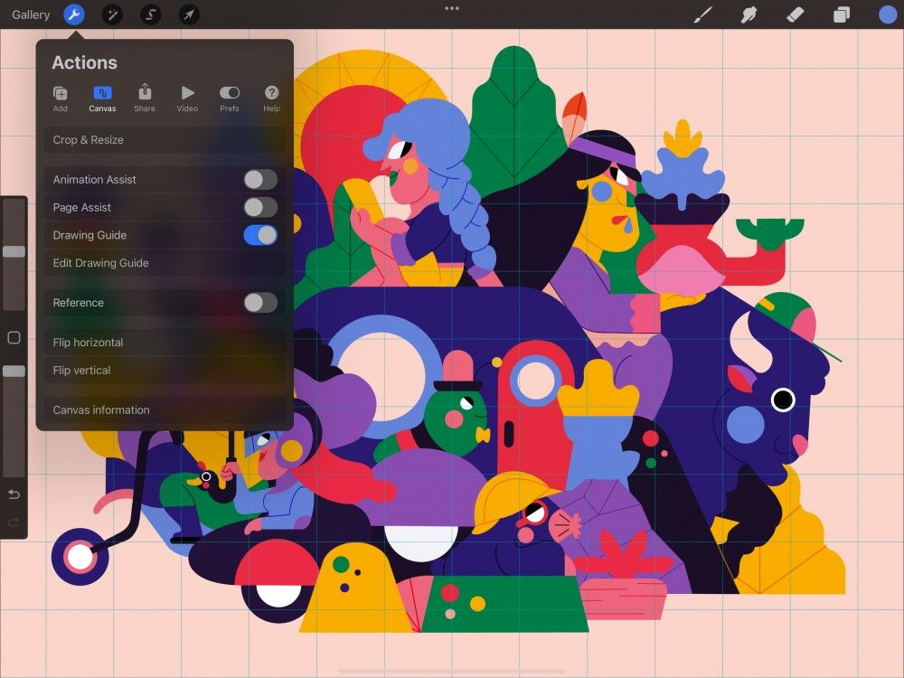
Dàn Drawing Guide của Procreate giải phóng bạn để tập trung vào bức tranh tổng thể. Tận hưởng 2D Grid (lưới 2D) chính xác, Drawing Assist gọn gàng, Perspective (phối cảnh) mạnh mẽ và Symmetry (đối xứng) đầy ấn tượng.
Chạm nút hình cái cờ lê ở góc trên bên trái màn hình để mở menu Actions. Chạm Canvas (khung vẽ), và gạt công tắc Drawing Guide (đường dẫn).
Drawing Guide của bạn hiện đã được kích hoạt.
Phần Drawing Guides cung cấp trình bày chuyên sâu về tính năng mạnh mẽ và đa năng này.
Reference Companion (trợ lý tham chiếu)
Thêm một cửa sổ nổi phía trên tác phẩm để tham chiếu khung vẽ. Reference Companion cũng cho phép bạn xem khuôn mặt mình theo thời gian thực khi làm việc trong FacePaint.
Để kích hoạt cửa sổ Reference Companion, chạm Actions → Canvas → công tắc Reference. Cửa sổ sẽ xuất hiện phía trên khung vẽ.
Di chuyển Reference Companion đến bất kỳ đâu trên khung vẽ bằng cách kéo qua tay cầm ở phần trên của cửa sổ.
Chạm và kéo góc dưới bên phải hoặc bên trái của cửa sổ để đổi kích thước Reference Companion. Bạn có thể pinch-zoom (chụm để phóng to) và kéo ảnh bên trong cửa sổ Reference Companion. Thao tác này hoạt động giống hệt như phóng to và di chuyển trên khung vẽ.
Ở dưới cùng của cửa sổ Reference Companion có ba nút để tham chiếu Canvas, Image và Face.
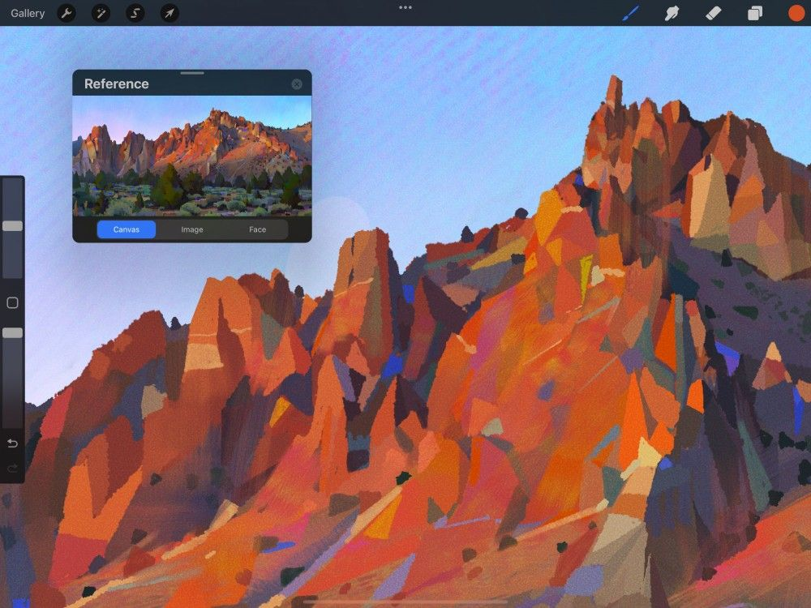
Reference Canvas (tham chiếu khung vẽ)
Xem toàn bộ khung vẽ trong khi làm việc. Phóng to một chi tiết, hoặc xem một phần khác của tác phẩm khi bạn vẽ.
Canvas là mặc định khi bạn mở Reference Companion. Canvas hiển thị ảnh tham chiếu toàn bộ khung vẽ và cập nhật trực tiếp khi bạn vẽ.
Phóng to và di chuyển để xem chi tiết khi làm việc. Bạn cũng có thể dùng Eyedropper (ống hút màu) để lấy màu từ bất kỳ đâu trong Reference Canvas.
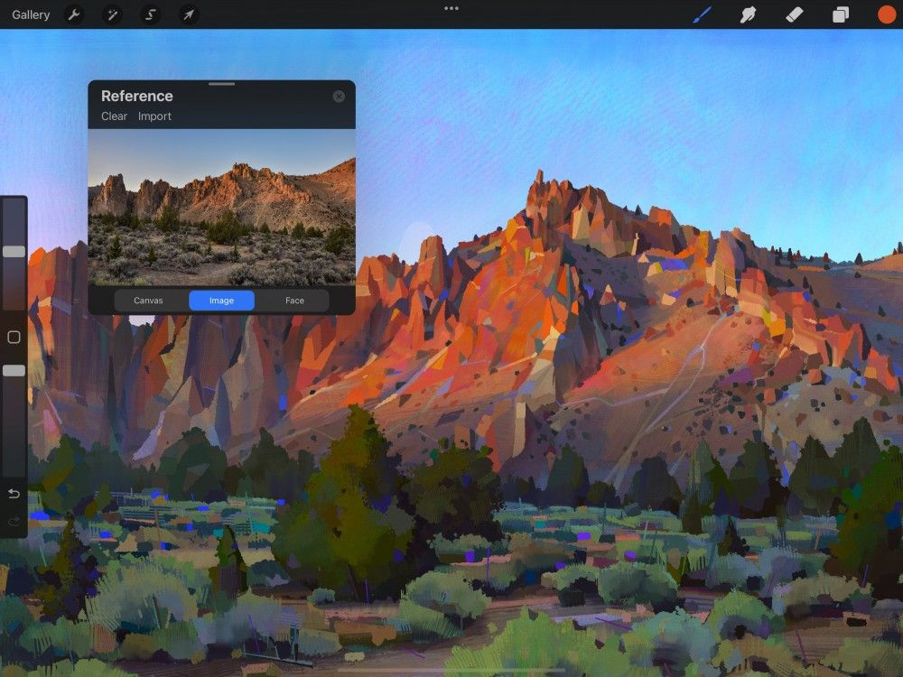
Reference Image (tham chiếu ảnh)
Dùng một ảnh làm tham chiếu mà không cần Split View hoặc dùng một lớp làm tham chiếu.
Nhiều họa sĩ dùng ảnh hoặc ảnh chụp trên khung vẽ làm tham chiếu khi làm việc. Nút Image cho phép bạn nhập ảnh từ ứng dụng Photos để dùng làm Reference Image thay thế.
Phóng to và di chuyển để xem chi tiết khi làm việc. Bạn cũng có thể dùng Eyedropper (ống hút màu) để lấy màu từ bất kỳ đâu trong Reference Canvas.
Nếu bạn có iPad оснащ camera TrueDepth hoặc chip A12 (trở lên), Reference Companion cũng sẽ có nút Face để kích hoạt FacePaint.
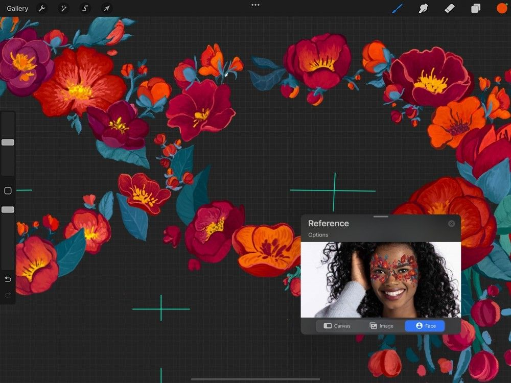
Reference Face (tham chiếu khuôn mặt)
Vẽ lên khuôn mặt bạn bằng Reference Companion và AR.
Nút Face kích hoạt FacePaint và camera trước của iPad. Dùng công nghệ AR, FacePaint chiếu mọi thứ trên khung vẽ lên khuôn mặt bạn theo thời gian thực.
Reference Face hoạt động kết hợp với FacePaint và một khung vẽ FacePaint tùy chỉnh.
Tìm hiểu thêm về FacePaint ở bên dưới.

Reference 3D (tham chiếu 3D)
Reference companion có ba chế độ xem khác nhau để giúp bạn làm việc trên khung vẽ 3D và vẽ.
Để bật Reference companion, chạm Actions → Canvas → bật công tắc Reference.
Tìm hiểu thêm về 3D Reference companion và cách hoạt động trong Interface & Gestures thuộc phần 3D Painting của cuốn Cẩm nang này.
FacePaint
Dùng FacePaint và AR của Procreate để tạo mặt nạ tương tác, lớp trang điểm và nhiều hơn nữa.
Sáng tạo trong FacePaint
Để bắt đầu FacePaint, hãy vào Gallery và nhấn + để tạo một Canvas mới. Chạm FacePaint trong danh sách preset khung vẽ, một khung vẽ trống không có lớp sẽ mở ra. Thao tác này sẽ tự động kích hoạt FacePaint Companion.
Bạn cũng có thể kích hoạt FacePaint bằng cách chạm Actions → Canvas → công tắc Reference để mở Reference Companion. Chạm nút Face trên cửa sổ Reference Companion. Bạn sẽ thấy video quay từ camera trước của iPad trong cửa sổ Reference Companion.
FacePaint hoạt động bằng cách bọc một khung vẽ FacePaint tùy chỉnh lên khuôn mặt bạn bằng AR. FacePaint hiển thị bốn đường dẫn trên Canvas khi camera trước phát hiện khuôn mặt. Các đường dẫn này thể hiện vị trí mắt, mũi và miệng của bạn. Dùng chúng để định vị khi vẽ trên Canvas. Mọi thứ bạn vẽ trên Canvas sẽ được chiếu lên khuôn mặt bạn trong cửa sổ Reference Companion.
Mọi thứ bạn có thể làm trong Procreate đều có thể làm trong FacePaint. Bao gồm cả việc dùng lớp, blend mode và tất cả hiệu ứng. Ngay cả Animation Assist cũng hoạt động trong FacePaint, cho phép bạn thổi hồn vào các sáng tạo.
FacePaint khả dụng nếu bạn có iPad оснащ camera TrueDepth hoặc chip A12 (trở lên).
Tùy chọn FacePaint
Chia sẻ các sáng tạo FacePaint của bạn với mọi người. Xuất chúng dưới dạng ảnh hoặc video từ menu Options.
FacePaint sẽ xuất mọi thứ hiển thị trong cửa sổ Reference Companion.
Take a Photo (chụp ảnh)
Để chụp ảnh, chạm Options → Take a Photo trên cửa sổ Reference Companion. Bộ đếm ngược từ 3 sẽ bắt đầu trước khi chụp. Ảnh sẽ được lưu vào ứng dụng Camera và Photos dưới dạng .JPG 3088x2320 72DPI
Record a Video (quay video)
Để quay video, chạm Options → Record a Video ở góc trên bên trái của cửa sổ Reference Companion. Thao tác này sẽ quay mọi thứ trong cửa sổ Reference rồi lưu vào ứng dụng Camera và Photos dưới dạng MP4 định dạng H264 1080p.
Nếu bạn muốn tắt camera trước và chỉ xem tác phẩm FacePaint của mình trên nền trống, hãy chạm Options → Camera. Ban đầu, tác phẩm FacePaint sẽ hiển thị trên nền trắng. Bạn có thể thay đổi điều này bằng cách đổi màu của Background Layer ở dưới cùng danh sách Layer.
Full Screen (toàn màn hình)
Để xem phiên bản toàn màn hình của nội dung trong cửa sổ Reference Companion, chạm Options → Full Screen. Để quay lại khung vẽ kèm cửa sổ Reference Companion, chạm lại Options → Full Screen.
Flip Canvas (lật khung vẽ)
Lật khung vẽ để xem tác phẩm bằng con mắt mới.
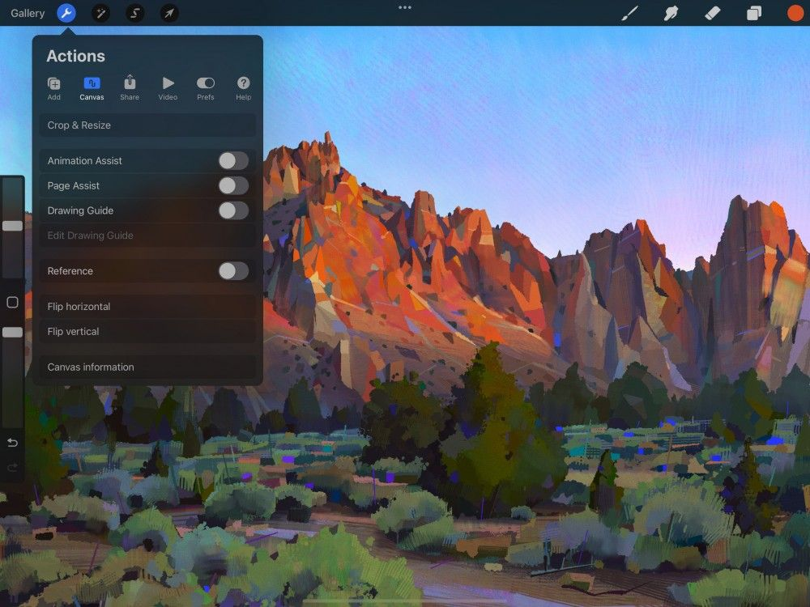
Chạm Actions → Canvas → Flip canvas horizontally (lật ngang) hoặc Flip canvas vertically (lật dọc).
Khung vẽ sẽ lật theo trục ngang (trái sang phải) hoặc trục dọc (trên xuống dưới).
Bạn cũng có thể lật khung vẽ từ QuickMenu.
Canvas Information (thông tin khung vẽ)
Xem thông tin kỹ thuật toàn diện về tác phẩm.
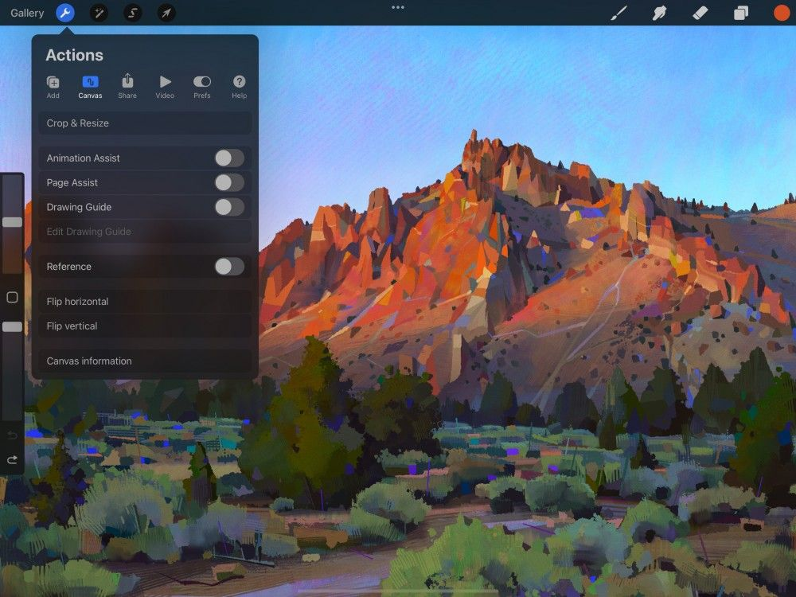
Chạm Actions → Canvas → Canvas information.
Thao tác này sẽ mở màn hình Canvas Information. Nó được chia thành các phần sau:
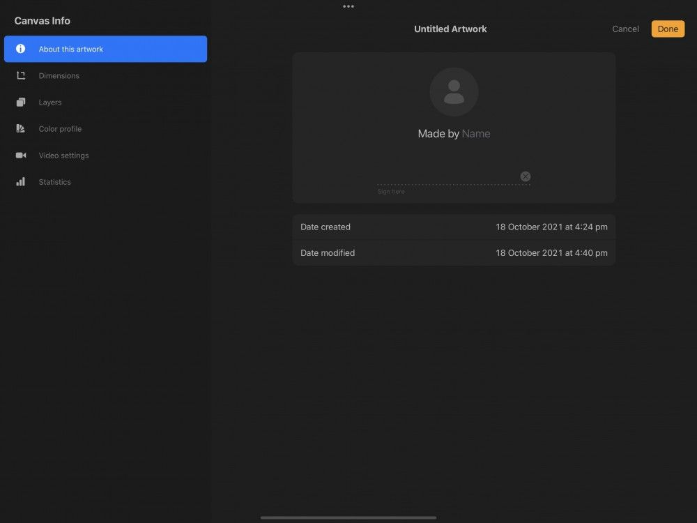
About this artwork (về tác phẩm này)
Giờ đây bạn có thể 'ký' tác phẩm bằng tên, chữ ký viết tay và ảnh đại diện. Thông tin này được nhúng vào tệp .procreate, bất kỳ ai mở ảnh trong Procreate đều sẽ thấy tên bạn trong Canvas Information.
Artwork Title (tiêu đề tác phẩm)
Đổi tiêu đề tác phẩm mà không cần quay lại Gallery. Chạm vào tiêu đề tác phẩm để hiện bàn phím iOS. Nhập tên mới rồi chạm phím return.
Ảnh đại diện
Chạm biểu tượng 'person' để hiện các tùy chọn Image Source. From Camera cho phép bạn tự chụp ảnh bằng camera iPad. Hoặc chọn From Photos để tải ảnh từ camera roll.
Made by Name (tạo bởi)
Chạm chữ Name mờ trong Made by Name để hiện bàn phím iOS và thêm tên của bạn vào sáng tạo.
Signature (chữ ký)
Ký tên trên dòng chấm bằng Pencil hoặc ngón tay. Nếu cần làm lại, hãy chạm biểu tượng (x) để xóa trường.
Date Created (ngày tạo)
Ngày và giờ tạo khung vẽ.
Date Modified (ngày chỉnh sửa)
Ngày và giờ khung vẽ này được chỉnh sửa lần cuối trên thiết bị.
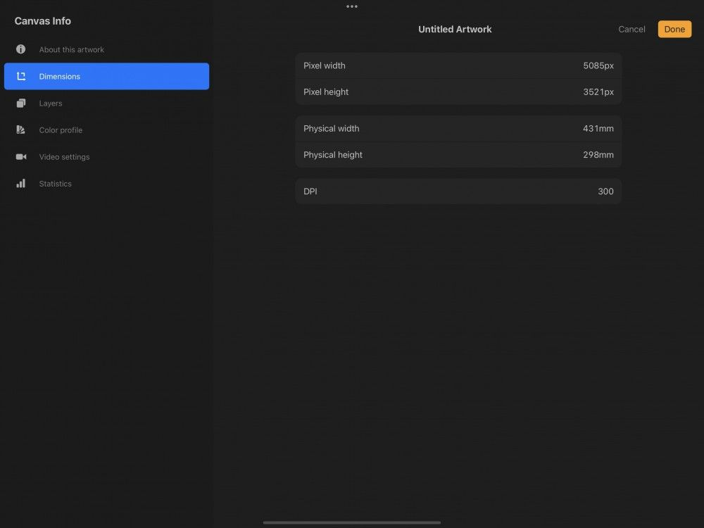
Dimensions (kích thước)
Pixel width / Pixel height (chiều rộng / chiều cao pixel)
Chiều rộng và chiều cao của khung vẽ tính bằng pixel. Tạo khung vẽ với đơn vị đo vật lý, như milimét hoặc inch, sẽ tính toán kích thước vật lý kết hợp với DPI.
Physical width / Physical height (chiều rộng / chiều cao vật lý)
Chiều rộng và chiều cao của khung vẽ hiển thị theo đơn vị đo bạn đã chọn khi tạo. Tạo khung vẽ theo pixel sẽ tính kích thước pixel kết hợp với DPI. Procreate dùng khu vực địa lý của bạn để xác định đơn vị đo vật lý mặc định.
DPI
Còn gọi là độ phân giải in, DPI (số điểm trên mỗi inch) cho biết mỗi inch của khung vẽ có bao nhiêu pixel. Pixel càng nhiều nghĩa là ảnh càng có khả năng thể hiện chi tiết và chất lượng in càng cao.
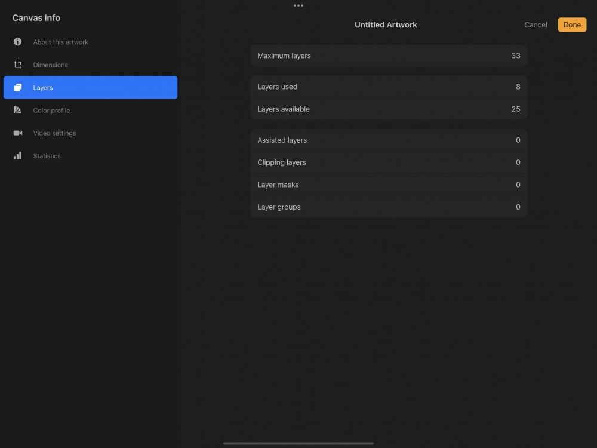
Layers
Maximum layers (số lớp tối đa)
Số lượng lớp cao nhất mà bạn có thể có trong khung vẽ này.
Layers used (lớp đã dùng)
Hiện có bao nhiêu lớp trong khung vẽ này.
Layers available (lớp còn trống)
Bạn có thể thêm bao nhiêu lớp nữa vào khung vẽ (số lớp tối đa trừ đi số lớp đã dùng).
Assisted / Clipping / masks / groups
Bốn danh mục này cho biết hiện có bao nhiêu lớp trong khung vẽ đang dùng Drawing Assist, bao nhiêu được đặt làm Drawing Assist, bao nhiêu được đặt làm Clipping mask, và có bao nhiêu Layer mask cùng Layer group trong tác phẩm này.
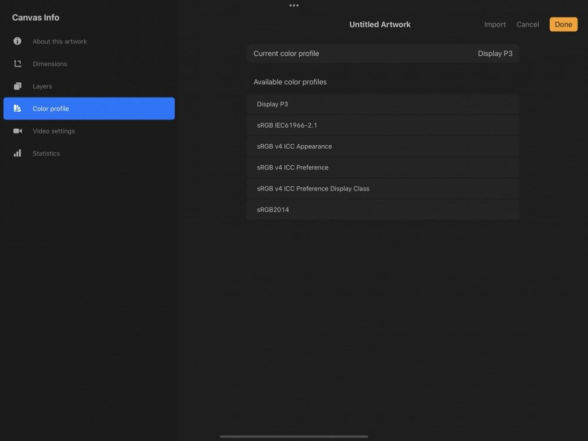
Color profile (hồ sơ màu)
Hiển thị hồ sơ màu mà tác phẩm đang dùng. Điều này do bạn đặt khi tạo khung vẽ.
Bạn có thể đổi hồ sơ màu của tác phẩm bất cứ lúc nào. Tìm hiểu cách thực hiện trong Color → Profiles.
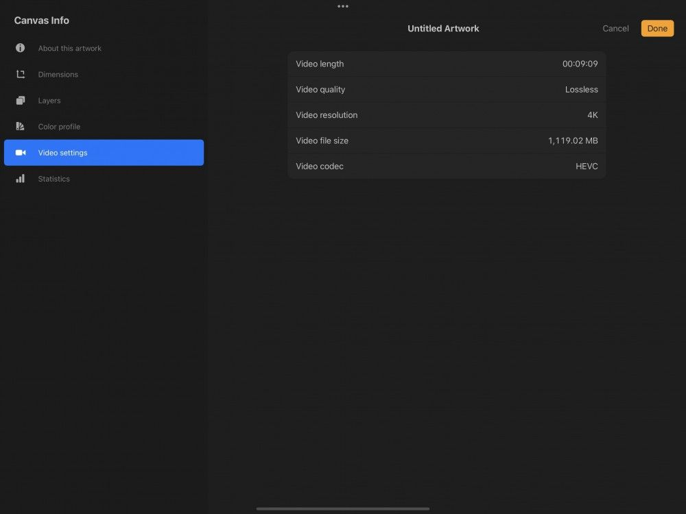
Video settings (cài đặt video)
Procreate có thể tạo bản ghi video Time-lapse về quá trình sáng tạo của bạn. Sau đó bạn có thể xuất để chia sẻ với mọi người.
Khám phá cách bật, tắt và điều chỉnh video Time-lapse của bạn.
Video length (độ dài video)
Thời lượng của video Time-lapse được tạo từ tác phẩm này.
Video quality (chất lượng video)
Cài đặt chất lượng của bản ghi video Time-lapse. Cài đặt cao hơn cho chất lượng hình ảnh tốt hơn nhưng làm tăng kích thước tệp. Điều này nghĩa là nó sẽ chiếm nhiều không gian lưu trữ hơn và tải lên/tải xuống chậm hơn.
Video resolution (độ phân giải video)
Giống như độ phân giải ảnh, độ phân giải cao hơn nghĩa là video của bạn chứa nhiều pixel hơn. Video độ phân giải cao trông đẹp hơn trên màn hình lớn. Độ phân giải cao hơn đồng nghĩa với kích thước tệp lớn hơn.
Video file size (dung lượng tệp video)
Thông số này cho biết dung lượng của video Time-lapse tính bằng megabyte. Độ dài, cài đặt chất lượng và độ phân giải của video đều ảnh hưởng đến dung lượng tệp.
Video codec (codec video)
Codec là kiểu nén mà tệp video của bạn dùng. Tìm hiểu thêm về nó trong Time-lapse Video.
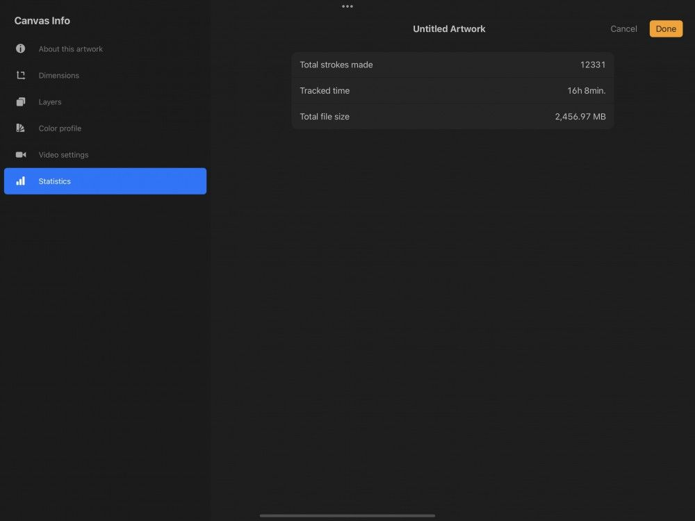
Statistics (thống kê)
Total strokes made (tổng nét đã vẽ)
Theo dõi số nét riêng lẻ mà bạn đã vẽ trong tác phẩm hiện tại.
Tracked time (thời gian theo dõi)
Cho biết tác phẩm hiện tại đã được mở bao lâu tính trên nhiều phiên làm việc.
Total file size (tổng dung lượng tệp)
Kích thước tệp .procreate của bạn, tính bằng megabyte.
Still have questions?
If you didn't find what you're looking for, explore our video resources on YouTube or contact us directly. We’re always happy to help.